X
GOOD
ANSWER!
🛠 Dev Panel
Ctrl+D
✕
Animations
▶ Top Answer
▶ Strike X
PLAY ON ONE SCREEN
Phone Controller
Join Game
You're in! Waiting for host to start…
Game Recap
Game Summary
Stats
Results
Type
Red
Blue
Awards
◀
▶
Red Team
0
Blue Team
0
v0.49
G
O
O
D
G
O
O
D
ANSWER
ANSWER
Click anywhere to start
© Buffano Games
Choose Game Mode
Local Game
Same room, one screen
Online Game
Friends join from their devices
Offline Mode
Single device, no network
◀ Back
Game Setup
Number of Rounds:
2
4
6
Game Speed:
◀
1
▶
◀
Back
▶
Next
◀
Back
Red Team
Players
−
+
Blue Team
Players
−
+
▶
Start Game
Red Team has the board
Player is up
Submit
PRIZES
▲
1
▼
Turn Order
Red Team
0
Round
0
of
—
Blue Team
0
Turn Order
Question options
Answer History
Answers
Pts
Mult
Total
Streak
—
Multiplier
—
Strikes
ROUND SUMMARY
Red
0
Blue
0
Battle 1
vs
GET READY
1:00
Total:
0
/
0
Battle 2
vs
UP NEXT
1:00
Total:
0
/
0
Choose Your Word
10
Waiting for other drawer...
Secret Scribble
Drawers are selecting words...
1:00
Draw this!

CLEAR
UNDO
Brush
Teammate
Opponent
Guess
ROUND SUMMARY
Red Team
0
Blue Team
0
Clue
—
·
0
ROUND SUMMARY
Red
0
Blue
0
Words:
0
Score:
0
3:00
Red
Blue
CANCELLED OUT
ROUND SUMMARY
WORDS SUBMITTED
POINTS SCORED
WORDS FOUND
Red
0
Blue
0
ROUND SUMMARY
PLAYER POINTS
QUESTIONS
Red
0
Blue
0
Fast Money
Player A
0
Clock
0
Player B
0
Player A
Player B
Player Totals:
0
0
Combined Fast Money Total:
0
Advanced question options
Copy answers for question 1
|
Copy answers for question 2
|
Copy answers for question 3
|
Copy answers for question 4
|
Copy answers for question 5
|
Copy answers for all questions
Copied!
Answer the question
Submit
Answer History